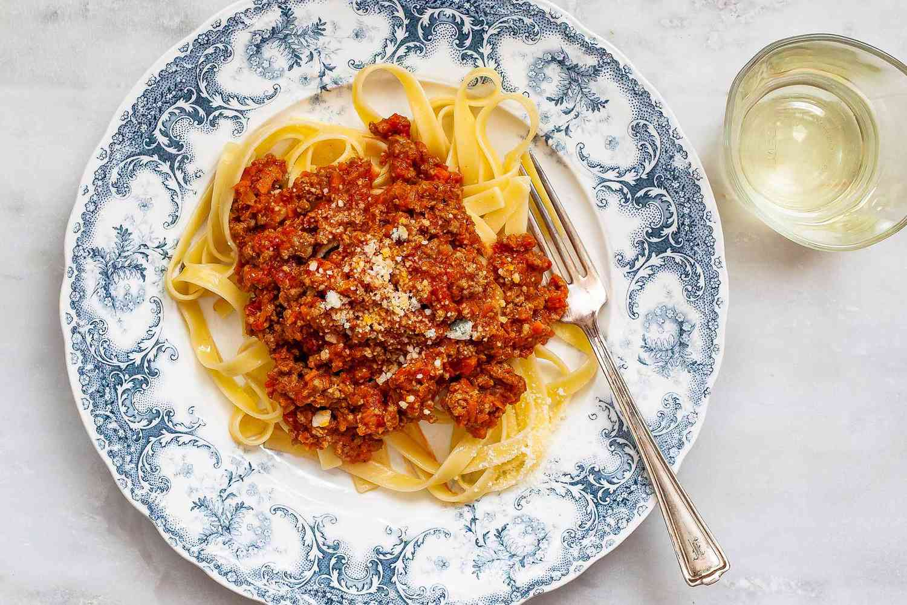

Hello World
Mijn eerste webpagina
- item 1
- item 1
- item 1

Ingredienten
- 500g spaghetti
- 1 ui
- 2 teentjes knoflook
- 2 el olijfolie
- 800g gehakte tomatensaus
- 1 snuifje suiker
- geraspte kaas
- peper en zout
-
Pel en snipper de ui en de knoflook. Fruit ze glazig in een flinke
scheut olijfolie.
- Doe er de tomaten, de tomatenpuree en een schuifje suiker bij.
- Maak het chilipepertje schoon en verwijder de zaadjes